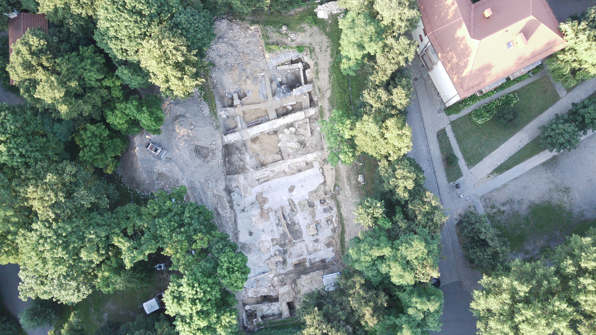
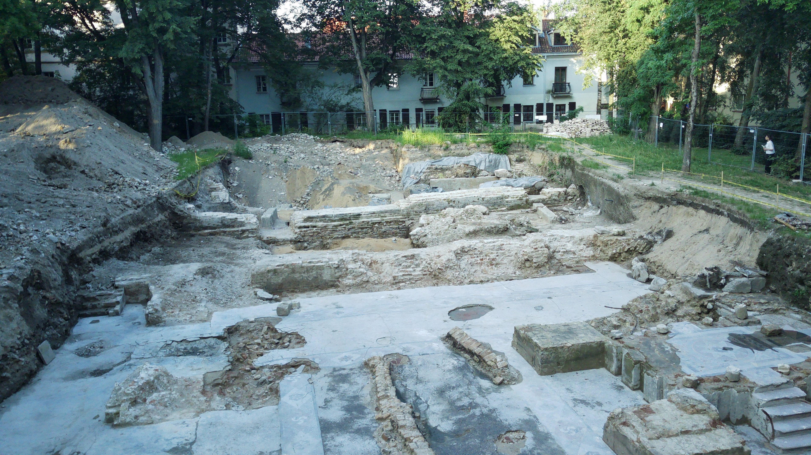
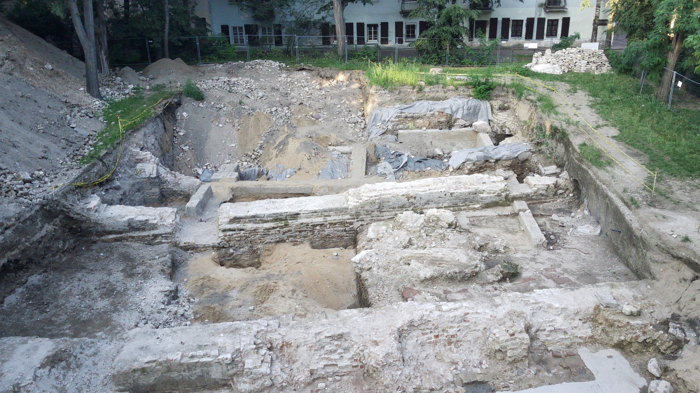
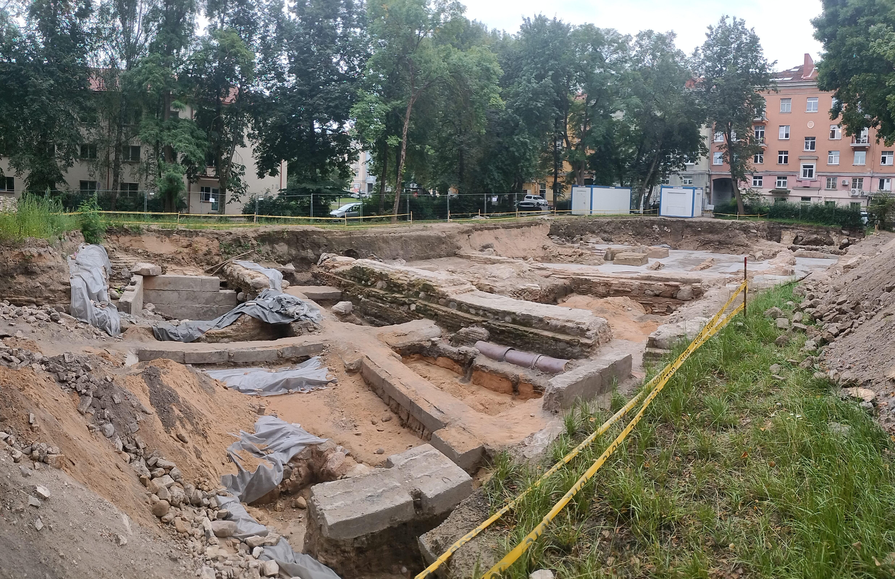
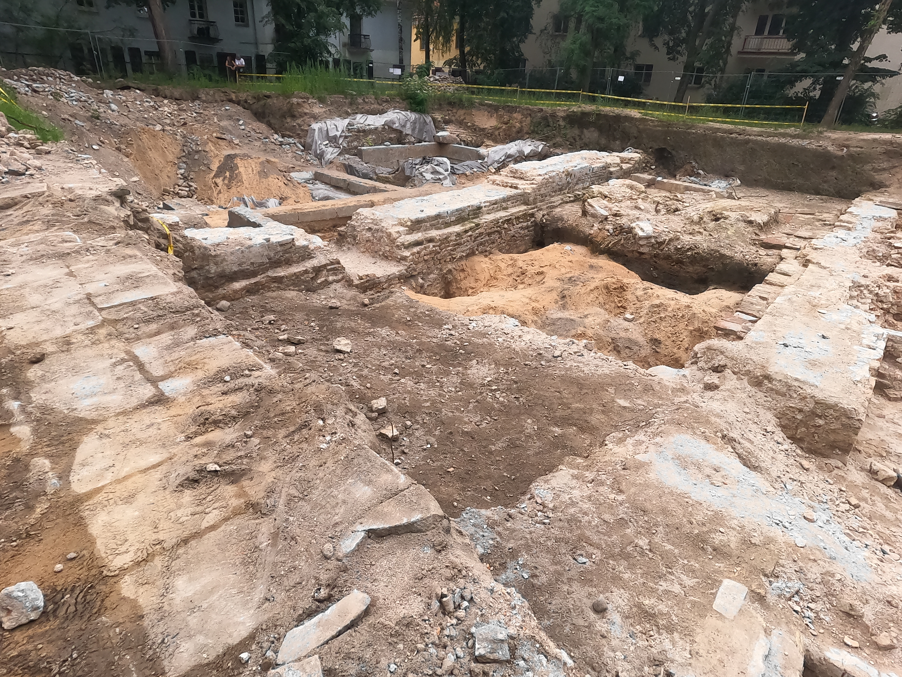
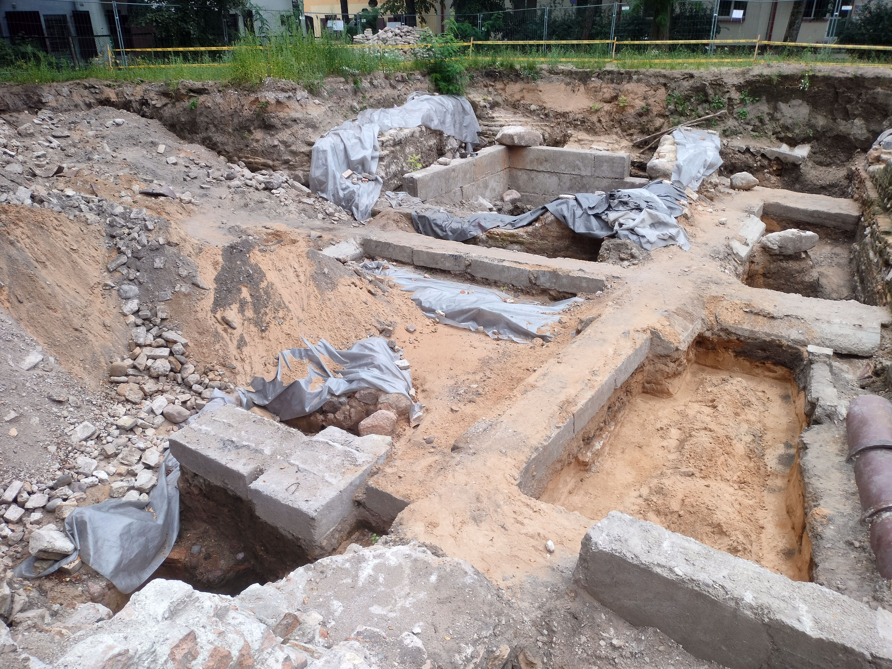
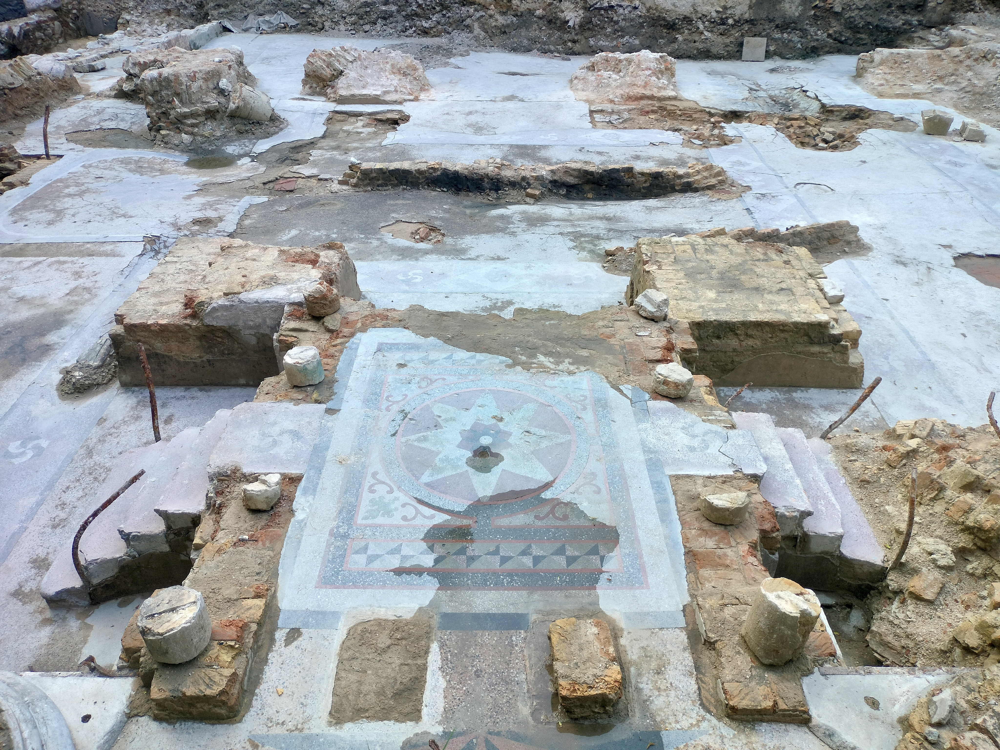

POV of excavation.
https://youtu.be/KLTcjU16M8c?is=6zTXBbIsQ_DL6bYrPhotos by W.A.Pahl










This web page is under construction. Ongoing additions and edits will be made.
Bill Pahl's Photographic Selection from the Summer 2026 Great Vilna Synagogue Excavations.
These photos may be reproduced with attribution to William Adan Pahl. Taken summer 2026.
POV of excavation.
https://youtu.be/KLTcjU16M8c?is=6zTXBbIsQ_DL6bYrPhotos by W.A.Pahl






